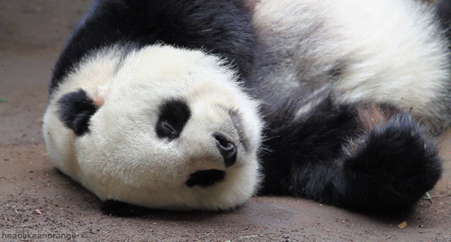

In Celebration of Pandas
This website was created to celebrate the big furry (and sometimes hilarious) bears just wishing to be left alone in the mountains of Western China.
Included are standard, silly, and just plain strange facts about these adorable creatures.


The main threat to the survival of the pandas is the destruction of their habitat. Cattle, sheep and goats graze on any emerging seedlings and prevent regeneration of the forest, and their hooves loosen the thin mountain soil. Whatever the number of pandas surviving in the wild, it is quite clear that the giant panda will become extinct in the next century unless more steps are taken to protect its habitat. It is estimated that the giant pandas now exist in about 35 isolated populations and that most of these contain fewer than 20 individuals.
Giant Pandas are known around the world for their unique black and white appearance. They resemble other bears in their shape, but have very distinctive markings. All Giant Pandas have black patches around their eyes and black ears on a white head. Their legs are black and there is a black band across their backs. Their mid sections are also white. It is very difficult to tell Giant Pandas apart since their markings are basically the same on all animals. Caretakers can identify individual Giant Pandas by small markings around their mouth or muzzle.
"The panda can and will endure as a symbol of our environment and a wonder of evolution. To protect this luminous fragment of life we must monitor its fate with vigilance, compassion, wisdom, and loyalty, with a commitment measured in terms not of decades but of centuries." George B Schaller, Wildlife Conservation Society (first WWF supported panda researcher in China)
Referred to as a “living fossil,” the Giant Panda is believed to have existed since the Pleistocene age, approximately 3 million years ago. After years of debate, scientists have determined through DNA testing that the Giant Panda is actually a member of the bear family. It was once thought they might be of the raccoon family. The scientific name of the Giant Panda is Ailuropoda Melanoleuca.